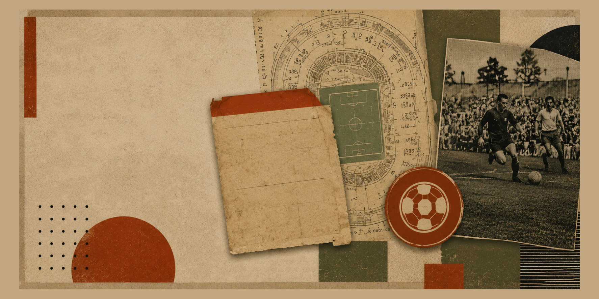

Last Word On Spurs
Supportersamtal, nyheter, reaktioner och diskussioner om Tottenham.

Källrummet // fotboll
Ett samlat matchrum för dig som följer Hammarby Fotboll, Bajenpoddar, Tottenham Hotspur, Premier League och fotbollens snabbaste nyhetskällor.
Fotbollsrummet samlar flöden som går att läsa snabbt: Hammarby- och Bajennyheter, Tottenham Hotspur och Spurs-kanaler, engelska rubriker, samtal, analyser och ekonomi. Tanken är enkel: färre flikar, bättre överblick och raka vägar vidare till originalkällorna.
Senaste posterna från ett kurerat urval av fotbollskällor: Hammarby Fotboll, Bajenpoddar, Tottenham Hotspur, Premier League, svenska fotbollsnyheter, internationella rubriker och analyser. Filtrera på nyheter, poddar, Bajen, Stryktipset, ekonomi, svenska spår, England eller internationellt. När ett flöde inte svarar visas en fast länk till källan.
Läser in fotbollsflöden...
De två senaste videorna från varje kanal: samtal, supporterperspektiv, matchreaktioner och analyser med fokus på Tottenham Hotspur.
Läser in de senaste Spurs-videorna...
Supportersamtal, nyheter, reaktioner och diskussioner om Tottenham.
Kommentarer och perspektiv på klubben, matcherna och besluten runt Spurs.
Tottenham-innehåll med supporterfokus, analyser och aktuella klubbfrågor.
Taktiska resonemang och fotbollsanalys med återkommande Spurs-perspektiv.
Ytterligare en kanal för videor, diskussioner och innehåll kopplat till Tottenham.
Supporterdrivet videoinnehåll med Tottenham Hotspur i centrum.